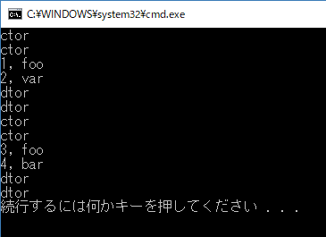
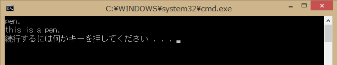
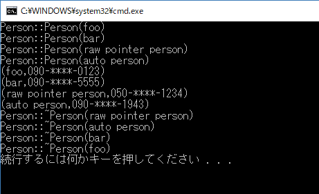
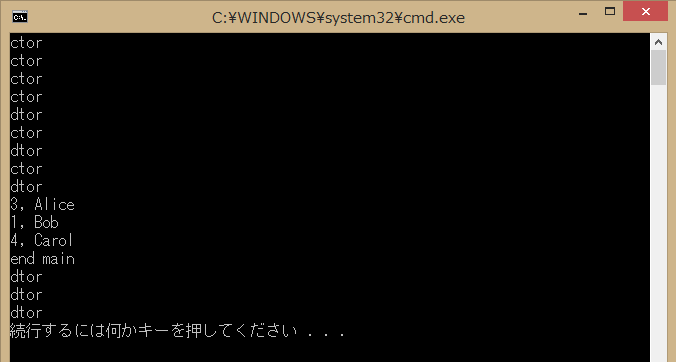
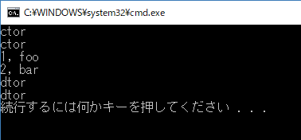

<!DOCTYPE html>
<html lang="ja">
<head>
  <meta charset="utf-8">
  <meta name="viewport" content="width=device-width, initial-scale=1">
  <meta name="author" content="木下英俊">
  <meta name="description" content="木下英俊が自身のためにプログラムメモを残すことを目的に作成したページです。">
  <meta name="keywords" content="">
  <!-- キャッシュ無効化 -->
  <meta http-equiv="Cache-Control" content="no-cache">
  
  <!-- タイトル -->
  <title>std::shared_ptr | Programming Items</title>

  <!-- ファビコン -->
  <link rel="shortcut icon" href="../../favicon.ico">
  
  <!-- CSS -->
  <link href="https://unpkg.com/ress/dist/ress.min.css" rel="stylesheet">
	<link rel="stylesheet" href="../../design.css" type="text/css">
  
	<!-- Start for 'google-code-prettify' -->
	<link href="../../prettify/styles/desert.css" rel="stylesheet" type="text/css">
	<script src="../../prettify/prettify.js" type="text/javascript"></script>
	<!-- End for 'google-code-prettify' -->	

  <!-- Global site tag (gtag.js) - Google Analytics -->
  <script async src="https://www.googletagmanager.com/gtag/js?id=G-V2DZQK54C2"></script>
  <script>
    window.dataLayer = window.dataLayer || [];
    function gtag(){dataLayer.push(arguments);}
    gtag('js', new Date());
  
    gtag('config', 'G-V2DZQK54C2');
  </script>
  <!-- Global site tag (gtag.js) - Google Analytics -->
  
  <style type="text/css">
    .auto-style1 {
      background-color: #505000;
    }
    .auto-style2 {
      text-decoration: underline;
    }
  </style>
</head>

<body onload="prettyPrint();">

  <h1>std::shared_ptr (c++11)</h1>
  <p>std::shared_ptr です。<span class="t-lines"><span><span class="t-mark">auto_ptr 
  が deprecated（廃止予定）になりましたので、今後はこの shared_ptr および unique_ptr 
  がスマートポインタの主流になっていくことでしょう。</span></span></span></p>
  
  <p>&nbsp;</p>
  
  <div class="mokuji">
    <nav>
    	<h2>目次</h2>
      <p><a href="#1._shared_ptr_を使ってみる">1. shared_ptr を使ってみる</a></p>
      <p>&nbsp;&nbsp; <a href="#1-1._その1">1-1. その1</a></p>
      <p>&nbsp;&nbsp; <a href="#1-2._その2">1-2. その2</a></p>
      <p>&nbsp;&nbsp; <a href="#1-3._その3">1-3. その3</a></p>
      <p><a href="#2._関数の引数に使う">2. 関数の引数に使う</a></p>
      <p>&nbsp;&nbsp; <a href="#2-1._その１">2-1. その１</a></p>
      <p>&nbsp;&nbsp; <a href="#2-2._その２">2-2. その２</a></p>
      <p><a href="#3._shared_ptr_で動的配列を使う">3. shared_ptr_で動的配列を使う</a></p>
      <p>&nbsp;&nbsp; <a href="#3-1._c++17_以前の環境の場合">3-1. c++17 以前の環境の場合</a></p>
      <p>&nbsp;&nbsp; <a href="#3-2._c++17_以降の環境の場合">3-2. c++17 以降の環境の場合</a></p>
      <p><a href="#4._malloc,_free_を_shared_ptr_に置き換える">4. malloc, free を shared_ptr_に置き換える</a></p>
      <p>&nbsp;&nbsp; <a href="#4-1._c++17_以前の環境の場合">4-1. c++17 以前の環境の場合</a></p>
      <p>&nbsp;&nbsp; <a href="#4-2._c++17_以降の環境の場合">4-2. c++17 以降の環境の場合</a></p>
      <p><a href="#5._fopen,_fclose_を_shared_ptr_に置き換える">5. fopen, fclose を shared_ptr に置き換える</a></p>
      <p><a href="#6._make_shared">6. make_shared</a></p>
      <p><a href="#7._make_shared_配列版">7. make_shared 配列版</a></p>
      <p><br></p>
      <p><a href="#ライセンス">ライセンス</a></p>
      <p><a href="#参考">参考</a></p>
    </nav>
  </div>
  
  <p>&nbsp;</p>
  <p>&nbsp;</p>

  <section>
    <h2><a name="1._shared_ptr_を使ってみる">1. shared_ptr を使ってみる</a></h2>
    <p><em>まずは</em> <strong><em>shared_ptr</em></strong> を使ってみます。<strong><em>unique_ptr</em></strong> 
    とほとんど同じ感じで使用できますが、<strong><em>shared_ptr</em></strong> はコピーできます。</p>
    <p>&nbsp;</p>
    
    <section>
      <h3><a name="1-1._その1">1-1. その1</a></h3>
      <p>最初にシンプルな shard_ptr 使用例を紹介します。</p>
      <p>&nbsp;</p>
      <p><strong>shared_ptr</strong> を直接使用する例を記載します。</p>
      <p>int 型の生成は、以下のように使用します。</p>
      <pre class="prettyprint lang-cpp" style="width:800px">std::shared_ptr<int> up(new int);</pre>
      <p>&nbsp;</p>
      <p>値の初期化を一緒に行いたい場合、以下のように使用します。下記例は 10 で初期化しています。 </p>
      <pre class="prettyprint lang-cpp" style="width:800px">std::shard_ptr<int> up(new int(10));</pre>
      <p>&nbsp;</p>
      <p>配列を確保する場合は、以下のように使用します。</p>
      <pre class="prettyprint lang-cpp" style="width:800px">std::shared_ptr<int[]> arr_sp(new int[5]);</pre>
      <p>&nbsp;</p>
      <p>配列の値を初期化と一緒に行いたい場合、以下のように使用します。下記例は {1,2,3,4,5} で初期化しています。 </p>
      <pre class="prettyprint lang-cpp" style="width:800px">std::shared_ptr<int[]> arr_up(new int[5]{1,2,3,4,5});</pre>
      <p>&nbsp;</p>
      <p><strong>make_shared</strong> による例を記載します。</p>
      
      <p>int 型の生成は、以下のように使用します。</p>
      <pre class="prettyprint lang-cpp" style="width:800px">auto sp = std::make_shared&lt;int&gt;();</pre>
      <p>&nbsp;</p>
      
      <p>値の初期化を一緒に行いたい場合、以下のように使用します。下記例は 77 で初期化しています。 </p>
      <pre class="prettyprint lang-cpp" style="width:800px">auto up = std::make_shared&lt;int&gt;(77);</pre>
      <p>&nbsp;</p>
      
      <p>配列を確保する場合、以下のように使用します。下記例では、配列数 5 です。<br>make_shared を使って初期化を一緒に行うことはできないようです。</p>
      
      <pre class="prettyprint lang-cpp" style="width:800px">
auto arr_up = std::make_shared&lt;int[]&gt;<int[]>(5); // 要素はデフォルト初期化（ゼロでない場合あり）
for (int i = 0; i &lt; 5; ++i) {
    arr_up[i] = (i + 1) * 10;
}</pre>

      <p>&nbsp;</p>
      <p>&nbsp;</p>
      <p>上記内容を含む c++ プログラムを以下で紹介します。</p>
      <p>&nbsp;</p>
      <p>ソースコード：</p>
      <p>["shared_ptr_01.cpp"]</p>
      
      <pre class="prettyprint linenums lang-cpp" style="width:800px">
#include &lt;iostream&gt;     // for std::cout
#include &lt;new&gt;          // for std::nothrow, placement new
#include &lt;memory&gt;       // for std::make_shared

/**
 * @brief std::shared_ptr, std::make_shared のシンプルなサンプル
 */

int main() {
    std::cout &lt;&lt; "-- shared_ptr simple examples start --\n";

    // 1) 単一 int の std::shared_ptr
    {
        std::shared_ptr&lt;int&gt; sp(new int(10));
        std::cout &lt;&lt; "*sp = " &lt;&lt; *sp &lt;&lt; "\n";
        // delete は自動的に行われる
    }

    // 2) int 配列の std::shared_ptr
    {
        std::shared_ptr&lt;int[]&gt; arr_sp(new int[5]{1,2,3,4,5});
        for (int i = 0; i &lt; 5; ++i) {
            std::cout &lt;&lt; "arr_sp[" &lt;&lt; i &lt;&lt; "] = " &lt;&lt; arr_sp[i] &lt;&lt; "\n";
        }
        // delete[] は自動的に行われる
    }

    // 3) 単一 int 生成、std::make_shared 版
    {
        auto sp = std::make_shared&lt;int&gt;(77);
        std::cout &lt;&lt; "shared_ptr owns = " &lt;&lt; *sp &lt;&lt; "\n";
        // delete は自動的に行われる
    }
 
    // 4) 配列 int 生成、std::make_shared 配列版（C++20 以降）
    {
        auto arr_sp = std::make_shared&lt;int[]&gt;(5);   // 要素はデフォルト初期化（ゼロでない場合あり）
        for (int i = 0; i &lt; 5; ++i) {
            arr_sp[i] = (i + 1) * 10;
        }
        std::cout &lt;&lt; "make_shared&lt;int[]&gt; contents:";
        for (int i = 0; i &lt; 5; ++i) {
            std::cout &lt;&lt; ' ' &lt;&lt; arr_sp[i];
        }
        std::cout &lt;&lt; '\n';
        // delete[] は自動的に行われる
    }

    std::cout &lt;&lt; "-- shared_ptr simple examples end --\n";
   return 0;
}</pre>

      <p>&nbsp;</p>
      
      <p>ビルド方法：</p>
      <pre class="prettyprint lang-bsh" style="width:800px">g++ -std=c++23 -g -Wall -Wextra -Wpedantic shared_ptr_01.cpp -o shared_ptr_01.out</pre>
      <p>&nbsp;</p>
      <p>実行結果：</p>
      
      <pre class="prettyprint lang-bsh" style="width:800px">
$ ./shared_ptr_01.out 
-- shared_ptr simple examples start --
*sp = 10
arr_sp[0] = 1
arr_sp[1] = 2
arr_sp[2] = 3
arr_sp[3] = 4
arr_sp[4] = 5
shared_ptr owns = 77
make_shared&lt;int[]&gt; contents: 10 20 30 40 50
-- shared_ptr simple examples end --
$ </pre>
      <p>&nbsp;</p>
      
    </section>
    
    <p>&nbsp;</p>
    <p>&nbsp;</p>
    <h3><a name="1-2._その2">1-2. その2</a></h3>
    <p>前の節で shared_ptr の簡単な使用方法について記載しました。 </p>
    <p>でも「本当に解放処理を自動的にやってくれてるのか心配」ですよね。 </p>
    <p>本節では、shared_ptr で class インスタンスを生成して、delete 無しで自動的にデストラクタが実行されることを確認してみます。</p>
    <p>&nbsp;</p>
    <p>[ソースコード： "shared_ptr_cpp"]</p>
    
    <pre class="prettyprint linenums lang-cpp" style="width:800px">
#include "stdafx.h"

#include &lt;iostream&gt;
#include &lt;string&gt;
#include &lt;memory&gt;
#include &lt;vector&gt;

using namespace std;

struct Data {
    int id;
    std::string name;

    Data()
        : Data(0, "") {}
    Data(int id, const std::string&amp; name)
        : id(id), name(name)
    {
        std::cout &lt;&lt; "ctor" &lt;&lt; std::endl;
    }

    ~Data()
    {
        std::cout &lt;&lt; "dtor" &lt;&lt; std::endl;
    }
};

int main()
{
    {
        vector&lt;<span class="auto-style1">shared_ptr</span>&lt;Data&gt;&gt; v1;

        v1.push_back(<span class="auto-style1">shared_ptr</span>&lt;Data&gt;(new Data(1, "foo")));
        v1.push_back(<span class="auto-style1">shared_ptr</span>&lt;Data&gt;(new Data(2, "var")));

        for (auto data : v1) {
            cout &lt;&lt; data-&gt;id &lt;&lt; ", " &lt;&lt; data-&gt;name &lt;&lt; endl;
        }
    }

    {
        vector&lt;<span class="auto-style1">shared_ptr</span>&lt;Data&gt;&gt; v2;

        v2.emplace_back(new Data(3, "foo"));
        v2.emplace_back(new Data(4, "bar"));

        for (auto data : v2) {
            cout &lt;&lt; data-&gt;id &lt;&lt; ", " &lt;&lt; data-&gt;name &lt;&lt; endl;
        }
    }

    return EXIT_SUCCESS;
}</pre>

    <p>&nbsp;</p>
    <p>実行結果<br></p>
    <p>デストラクタが自動的に実行されてメモリ解放が行われていることがわかります。</p>
    <p>&nbsp;</p>

    <h4>評価環境：</h4>
    <ul>
    	<li>コンパイラ： Visual Studio 2017 Version 15.6.7</li>
    	<li>ＯＳ： Windows 10 home 64bit, version 1803, 日本語版</li>
    </ul>
    
    <p>&nbsp;</p>
    
  </section>

  <p>&nbsp;</p>
  
  <section>
<h3><a name="1-3._その3">1-3. その3</a></h3>
<p>Let's boost のホームページからサンプルプログラムを引用、少し修正して以下に掲載します。</p>


    <pre class="prettyprint linenums lang-cpp" style="width:800px">
#include &lt;iostream&gt;   // cout, EXIT_SUCCESS
#include &lt;string&gt;     // string
#include &lt;memory&gt;     // shared_ptr
#include &lt;vector&gt;     // vector

using namespace std;

int main(int argc, char* argv[])
{
    typedef <span class="auto-style1">shared_ptr</span>&lt;string&gt; strPtr;

    auto s = strPtr(new string("pen."));
    vector&lt; strPtr &gt; v;

    // vectorに入れたり。
    v.push_back( strPtr(new string("this")) );
    v.push_back( strPtr(new string("is")) );
    v.push_back( strPtr(new string("a")) );
    v.push_back(s);

    cout &lt;&lt; *s &lt;&lt; endl;
    
    // sをpush_backで他にコピーしたからと言って使えなくなったりしない。
    // auto_ptr, unique_ptr だと使えなくなる。

    // vector に保存した文字列を出力
    for ( strPtr pStr : v)       // ranged-for で表記
    {
        cout &lt;&lt; *pStr &lt;&lt; " ";
    }
    cout &lt;&lt; endl;

    return EXIT_SUCCESS;
}
// ここで全て delete される
</pre>

    <p>&nbsp;</p>
    <h4>出力結果：<br></h4>
    <p>&nbsp;</p>
    <h4>評価環境：</h4>
    <ul>
    	<li>コンパイラ： Visual Studio 2013</li>
    	<li>ＯＳ： Windows8.1 64bit 日本語版</li>
    </ul>
    
    <p>&nbsp;</p>
  </section>

  <p>&nbsp;</p>

  <section>
    <h2><a name="2._関数の引数に使う">2. 関数の引数に使う</a></h2>
    <p><strong>std::shared_ptr</strong> を関数の引数に使用する例を紹介します。</p>
    <p>&nbsp;</p>
    
    <section>
      <h3><a name="2-1._その１">2-1. その１</a></h3>
      
      <p>関数の引数に <strong>shared_ptr</strong> を渡してみます。<br>関数に <strong>shared_ptr</strong> を渡したり、関数の中で  
      <strong>shared_ptr</strong> 
      の値を変更したり、といったことができます。</p>
      <p>&nbsp;</p>
      <p>[ソースコード: "function_argument_sample.cpp"]</p>
      <pre class="prettyprint linenums lang-cpp" style="width:800px">
/**
 * @file function_argument_sample_01.cpp
 * @brief shared_ptr を関数引数として渡す際の動作をデモンストレーションするサンプルプログラム
 * 
 * このプログラムは、std::shared_ptr を使用したオブジェクトの所有権と参照カウントの管理を、
 * 関数引数として渡すさまざまな方法（const参照、参照渡し、値渡し）を通じて説明します。
 * 具体的には、以下の機能をサンプルとして実装しています：
 * - inspect 関数: shared_ptr を const 参照で受け取り、内容を表示（読み取り専用）。
 * - resetByRef 関数: shared_ptr を参照で受け取り、オブジェクトを差し替える。
 * - takeOwnership 関数: shared_ptr を値渡しで受け取り、参照カウントを増やして所有権を共有。
 * - makePerson 関数: Person オブジェクトを生成して shared_ptr で返すファクトリ関数。
 * 
 * main 関数では、これらの関数を呼び出して shared_ptr の動作を確認します。
 * プログラムの実行により、参照カウントの増減や所有権の移転を理解できます。
 */
#include &lt;iostream&gt; // for std::cout
#include &lt;memory&gt;   // for std::shared_ptr
#include &lt;string&gt;   // for std::string

/**
 * @brief 簡易的な Person クラス（サンプル用）
 */
class Person {
private:
    std::string name_;
    std::string phone_;

public:
    Person(const std::string&amp; name, const std::string&amp; phone)
        : name_(name), phone_(phone) {}

    const std::string&amp; getName() const { return name_; }
    const std::string&amp; getPhone() const { return phone_; }
};

/**
 * @brief shared_ptr を読み取り専用で受け取り内容を表示する
 * @param person コンテンツを参照する const 参照の shared_ptr
 */
void inspect(const std::shared_ptr&lt;Person&gt;&amp; person)
{
    if (person) {
        std::cout &lt;&lt; "inspect: " &lt;&lt; person-&gt;getName() &lt;&lt; ", " &lt;&lt; person-&gt;getPhone() &lt;&lt; "\n";
    } else {
        std::cout &lt;&lt; "inspect: (null)\n";
    }
}

/**
 * @brief shared_ptr の参照を受け取り差し替える
 * @param person 差し替える対象の shared_ptr への参照
 */
void resetByRef(std::shared_ptr&lt;Person&gt;&amp; person)
{
    person = std::make_shared&lt;Person&gt;("replaced", "000-0000-0000");
}

/**
 * @brief shared_ptr を値渡しで受け取り参照カウントを増やす
 * @param person コピーを受け取る shared_ptr
 */
void takeOwnership(std::shared_ptr&lt;Person&gt; person)
{
    if (person) {
        std::cout &lt;&lt; "takeOwnership: received " &lt;&lt; person-&gt;getName() &lt;&lt; "\n";
    } else {
        std::cout &lt;&lt; "takeOwnership: (null)\n";
    }
    // person はここでスコープを抜けると参照カウントが減る
}

/**
 * @brief Person を生成して所有権を返すファクトリ関数
 * @param name 氏名
 * @param phone 電話番号
 * @return 所有権を持つ unique_ptr&lt;Person&gt;
 */
std::shared_ptr&lt;Person&gt; makePerson(const std::string&amp; name, const std::string&amp; phone)
{
    return std::make_shared&lt;Person&gt;(name, phone);
}

int main()
{
    std::cout &lt;&lt; "-- unique_ptr function argument sample start --\n";

    // 1) makePerson で生成して戻り値で受け取る
    auto p1 = makePerson("alice", "111-1111-1111");
    inspect(p1);

    // 2) resetByRef で参照を渡して差し替える
    resetByRef(p1);
    inspect(p1);

    // 3) takeOwnership に値渡しで渡す（コピーにより参照カウントが増える）
    auto p2 = makePerson("bob", "222-2222-2222");
    takeOwnership(p2);
    inspect(p2); // p2 はまだ有効（shared_ptr はコピーにより共有される）

    // 4) inspect に null を渡す
    std::shared_ptr&lt;Person&gt; empty;
    inspect(empty);

    std::cout &lt;&lt; "-- unique_ptr function argument sample end --\n";
    return 0;
}</pre>
      <p>&nbsp;</p>
      
      <p>ビルド方法 (g++)：</p>
      <pre class="prettyprint lang-bsh" style="width:800px">$ g++ -std=c++23 -Wall -Wextra -Wpedantic function_argument_sample_01.cpp -o function_argument_sample.out
$ </pre>
      <p>&nbsp;</p>
      
      <p>実行結果：</p>
      <pre class="prettyprint lang-bsh" style="width:800px">
$ ./function_argument_sample.out 
-- unique_ptr function argument sample start --
inspect: alice, 111-1111-1111
inspect: replaced, 000-0000-0000
takeOwnership: received bob
inspect: bob, 222-2222-2222
inspect: (null)
-- unique_ptr function argument sample end --
$</pre>

      <p>&nbsp;</p>
    </section>
    
    <p>&nbsp;</p>
    
    <section>
      <h3><a name="2-2._その２">2-2. その２</a></h3>
      
      <p>もう少し複雑な適用例を示します。<br>クラスと関数オーバーロードへの適用を例に示します。<br>smart_ptr 
      が最後にちゃんと解放されていることがわかります。<br>smart_ptr 
      と合わせて生のポインタとオート変数への適用も併記するので、使い方などを比較してみてください。</p>
      <p>&nbsp;</p>
  
      <pre class="prettyprint linenums lang-cpp" style="width:800px">
#include "targetver.h"

#include &lt;stdio.h&gt;
#include &lt;tchar.h&gt;
#include &lt;iostream&gt;     // cout, endl
#include &lt;string&gt;       // string
#include &lt;memory&gt;       // shared_ptr

using namespace std;


class Person{
private:
    string  name_;
    string  phone_;

public:
    Person()
        : Person("", "")                        // 委譲コンストラクタ、VS2013以降 OK、VS2012以前 NG
//      : name_(""), phone_("")                 // VS2012以前はこちらで
    {
    }

    Person(Person&amp; rhs)
        : Person(rhs.name_, rhs.phone_)         // 委譲コンストラクタ、VS2013以降 OK、VS2012以前 NG
//      : name_(rhs.name_), phone_(rhs.phone_)  // VS2012以前はこちらで
    {
    }

    Person(string name, string phone)
        : name_(name), phone_(phone)
    {
        cout &lt;&lt; "Person::Person(" &lt;&lt; name_ &lt;&lt; ")" &lt;&lt; endl;
    }

    virtual ~Person()
    {
        cout &lt;&lt; "Person::~Person(" &lt;&lt; name_ &lt;&lt; ")" &lt;&lt; endl;
    }

    const std::string getName() const
    {
        return name_;
    }

    const std::string getPhone() const
    {
        return phone_;
    }
};


/*==================================*/
/* グローバルな演算子オーバーロード */
/*==================================*/
// shared_ptr&lt;Person&gt; 用
std::ostream&amp; operator&lt;&lt;(std::ostream&amp; os, const <span class="auto-style1">shared_ptr</span>&lt;Person&gt; rhs)
{
    return (os &lt;&lt; '(' &lt;&lt; rhs-&gt;getName() &lt;&lt; ',' &lt;&lt; rhs-&gt;getPhone() &lt;&lt; ')');
}

// Person* 用
std::ostream&amp; operator&lt;&lt;(std::ostream&amp; os, const Person* rhs)
{
    return (os &lt;&lt; '(' &lt;&lt; rhs-&gt;getName() &lt;&lt; ',' &lt;&lt; rhs-&gt;getPhone() &lt;&lt; ')');
}

// Person 用
std::ostream&amp; operator&lt;&lt;(std::ostream&amp; os, const Person&amp; rhs)
{
    return (os &lt;&lt; '(' &lt;&lt; rhs.getName() &lt;&lt; ',' &lt;&lt; rhs.getPhone() &lt;&lt; ')');
}

<font face="Meiryo UI">// shared_ptr&lt;Person&gt; 用</font>
void PrintPerson(<span class="auto-style1">shared_ptr</span>&lt;Person&gt; person)
{
    cout &lt;&lt; person &lt;&lt; endl;
}
<font face="Meiryo UI">
// Person* 用</font>
void PrintPerson(Person* person)
{
    cout &lt;&lt; person &lt;&lt; endl;
}

// Person 用
void PrintPerson(Person&amp; person)
{
    cout &lt;&lt; person &lt;&lt; endl;
}


int _tmain(int argc, _TCHAR* argv[])
{
    /*========*/
    /* 前処理 */
    /*========*/
    <span class="auto-style1">shared_ptr</span>&lt;Person&gt; foo(new Person("foo", "090-****-0123"));
    <span class="auto-style1">shared_ptr</span>&lt;Person&gt; bar(new Person("bar", "090-****-5555"));

    auto ptPerson = new Person("raw pointer person", "050-****-1234");
    Person autoPerson("auto person", "090-****-1943");

    /*========*/
    /* 処理部 */
    /*========*/
    PrintPerson(foo);
    PrintPerson(bar);
    PrintPerson(ptPerson);
    PrintPerson(autoPerson);

    /*========*/
    /* 後処理 */
    /*========*/
    delete ptPerson;             // 生のポインタは delete による解放が必要です。

    return EXIT_SUCCESS;
}</pre>

      <p>&nbsp;</p>
      <p>実行結果<br></p>
      <p>foo, bar の２つの smart_ptr がちゃんと解放されていることがわかります。</p>
      <p>&nbsp;</p>
    </section>
    
  </section>
  
  <p>&nbsp;</p>
    
  <section>
    <h2><a name="3._shared_ptr_で動的配列を使う">3. shared_ptr で動的配列を使う</a></h2>
    <h3><a name="3-1._c++17_以前の環境の場合">3-1. c++17 以前の環境の場合</a></h3>
    <p>shared_ptr はポインタが無効になった時 delete を使用します。つまり 
    delete[]を必要とする動的配列を使用する場合は上記のような方法そのままでは使用できません。 boost::shared_array みたいなものは 
    標準c++ にはありません。<br>ただ、std::default_delete は配列に対する特殊化が提供されています。これ(std::default_delete)を使って shared_ptr 
    で動的配列を使用する例を以下で紹介します。</p>
    <p>&nbsp;</p>
    <p>■参考URL</p>
    <ul>
    	<li><a href="http://d.hatena.ne.jp/faith_and_brave/20110920/1316507398">http://d.hatena.ne.jp/faith_and_brave/20110920/1316507398</a></li>
    </ul>
    <p>&nbsp;</p>
    <p>スマートポインタの本家 boost はバージョン 1.53 以降で boost::shared_ptr 
    が配列(T[])に対応しました。標準にもいずれフィードバックされることでしょう。(c++17 で採用されました。)<br>また標準ではC++11で採用された std::unique_ptr 
    は delete, 
    delete[] を自動判断する機構が入っています。std::unique_ptr を使用することも検討しましょう。</p>
    <p>&nbsp;</p>
    
    <!--
    <table style="WIDTH: 800px; " border="1" cellspacing="0" cellpadding="0">
      <tr>
        <td style="width: 800px">
    -->

    <pre class="prettyprint linenums lang-cpp" style="width:800px">
#include &lt;iostream&gt;&nbsp;&nbsp;&nbsp;&nbsp; <span class="comment">// cout, EXIT_SUCCESS</span>
#include &lt;string&gt;&nbsp;&nbsp;&nbsp;&nbsp;&nbsp;&nbsp; <span class="comment">// string</span>
#include &lt;memory&gt;&nbsp;&nbsp;&nbsp;&nbsp;&nbsp;&nbsp; <span class="comment">// shared_ptr, default_delete</span>
#include &lt;vector&gt;&nbsp;&nbsp;&nbsp;&nbsp;&nbsp;&nbsp; <span class="comment">// vector</span>

using namespace std;

struct Data {
&nbsp;&nbsp;&nbsp; int id;
&nbsp;&nbsp;&nbsp; std::string name;

&nbsp;&nbsp;&nbsp; Data()
&nbsp;&nbsp;&nbsp;&nbsp;&nbsp;&nbsp;&nbsp; : Data(0, <span class="string">""</span>){}
&nbsp;&nbsp;&nbsp; Data( int id, const std::string&amp; name )
&nbsp;&nbsp;&nbsp;&nbsp;&nbsp;&nbsp;&nbsp; : id(id), name(name)
&nbsp;&nbsp;&nbsp; {
&nbsp;&nbsp;&nbsp;&nbsp;&nbsp;&nbsp;&nbsp; std::cout &lt;&lt; <span class="string">"ctor"</span> &lt;&lt; std::endl;
&nbsp;&nbsp;&nbsp; }

&nbsp;&nbsp;&nbsp; ~Data()
&nbsp;&nbsp;&nbsp; {
&nbsp;&nbsp;&nbsp;&nbsp;&nbsp;&nbsp;&nbsp; std::cout &lt;&lt; <span class="string">"dtor"</span> &lt;&lt; std::endl;
&nbsp;&nbsp;&nbsp; }
};

void disp( std::shared_ptr&lt;Data&gt; p, size_t n )
{
&nbsp;&nbsp;&nbsp; for (std::size_t i = 0; i &lt; n; ++i) {
&nbsp;&nbsp;&nbsp;&nbsp;&nbsp;&nbsp;&nbsp; const Data&amp; x = p.get()[i];
&nbsp;&nbsp;&nbsp;&nbsp;&nbsp;&nbsp;&nbsp; std::cout &lt;&lt; x.id &lt;&lt;<span class="string"> ", "</span> &lt;&lt; x.name &lt;&lt; std::endl;
&nbsp;&nbsp;&nbsp; }
}

int main()
{
&nbsp;&nbsp;&nbsp; std::size_t n = 3;
&nbsp;&nbsp;&nbsp; std::<span class="auto-style1">shared_ptr</span>&lt;Data&gt; p(new Data[n], std::default_delete&lt;Data[]&gt;());
&nbsp;&nbsp;&nbsp;
&nbsp;&nbsp;&nbsp; p.get()[0] = { 3, <span class="string">"Alice"</span> };
&nbsp;&nbsp;&nbsp; p.get()[1] = { 1, <span class="string">"Bob"</span> };
&nbsp;&nbsp;&nbsp; p.get()[2] = { 4, <span class="string">"Carol"</span> };

&nbsp;&nbsp;&nbsp; disp(p, n);

&nbsp;&nbsp;&nbsp; std::cout &lt;&lt; <span class="string">"end main"</span> &lt;&lt; std::endl;
}

</pre>

    <!--
    	  </td></tr></table>
    -->
    <p></p>
    <p>
    確かに配列をスマートポインタで扱えるようになりましたが、get()で生のポインタを取り出ししたのちに[]により指定する必要がある、など少々不便な感じがします。つまり 
    shared_ptr は[]のオペレータが無いのです。boost::shared_array の方が使い勝手が良かったように感じます。c++14 で 
    shared_array が追加されるか、shared_ptr に []のオペレータが追加されるか、などを期待します。（後日追記： c++17 
    で採用されました。）<br>
    配列を使う場合はコンテナ(std::vector, std::array, std::list)を使いなさい、ってのが背景にあるのかもしれません。</p>
    <p>&nbsp;</p>
    <p>&nbsp;</p>
  
    <h3><a name="3-2._c++17_以降の環境の場合">3-2. c++17 以降の環境の場合</a></h3>
    <p>c++17 にて shared_ptr が T[] および T[N] に対応しました。これで unique_ptr と同じように簡単に配列を実装できます。</p>
    <ul>
    	<li>Microsoft VC++： VS 2017 V15.5 で対応しました。</li>
    	<li>gcc： 対応時期 および 有効化方法は調査中。対応済みバージョンの gcc を使用するだけじゃなく、コンパイル時にオプションが必要そう。</li>
    </ul>
    <p>&nbsp;</p>

    <pre class="prettyprint linenums lang-cpp" style="width:800px">
#include "stdafx.h"

#include &lt;iostream&gt;
#include &lt;memory&gt;

using namespace std;

int main()
{
    // std::shared_ptr の例
    // default_delete の特殊化宣言は不要。delete[]が実行される。
    // []演算子もある。
    size_t  n = 10;
    <span class="auto-style1">shared_ptr</span>&lt;int[]&gt; data(new int[n]);

    cout &lt;&lt; "std::shared_ptr&lt;int&gt; : ";
    for (size_t i = 0; i &lt; n; ++i) {
        data[i] = i;
    }
    for (size_t i = 0; i &lt; n; ++i) {
        cout &lt;&lt; data[i] &lt;&lt; " ";
    }
    cout &lt;&lt; endl;

    return EXIT_SUCCESS;
}</pre>

    <p>&nbsp;</p>
    <h4>評価環境：</h4>
    <ul>
    	<li>コンパイラ： Visual Studio 2017 Version 15.6.7</li>
    	<li>ＯＳ： Windows 10 home 64bit, version 1803, 日本語版</li>
    </ul>
    <p>&nbsp;</p>
  </section>
  
  <p>&nbsp;</p>
  <h2><a name="4._malloc,_free_を_shared_ptr_に置き換える">4. malloc, free を shared_ptr に置き換える</a></h2>
  
  <section>
    <h3><a name="4-1._c++17_以前の環境の場合">4-1. c++17 以前の環境の場合</a></h3>
    <p>c 言語で規定されている malloc, calloc でメモリを動的に取得した場合、解放に使用する関数は delete や delete[] ではなく 
    free を使用します。デアロケータを指定することで shared_ptr のメモリ解放を free で行えるようにします。</p>
    <p>&nbsp;</p>

    <pre class="prettyprint linenums lang-cpp" style="width:800px">
#include &lt;iostream&gt;&nbsp;&nbsp;&nbsp;&nbsp; <span class="comment">// cout, EXIT_SUCCESS</span>
#include &lt;memory&gt;&nbsp;&nbsp;&nbsp;&nbsp;&nbsp;&nbsp; <span class="comment">// shared_ptr</span>
#include &lt;cstdlib&gt;&nbsp;&nbsp;&nbsp;&nbsp;&nbsp; <span class="comment">// malloc, free</span>

using namespace std;

int main()
{
&nbsp;&nbsp;&nbsp; const size_t&nbsp;&nbsp;&nbsp; n = 256;

&nbsp;&nbsp;&nbsp; <span class="auto-style1">shared_ptr</span>&lt;int&gt; memory( static_cast&lt;int*&gt;(malloc(n*sizeof(int))), free);<span class="auto-style2">

</span>    <span class="comment">// いちおうメモリ取得できたかを確認のうえで使用しましょう。</span><span class="auto-style2">
</span>    if ( memory.get() != nullptr ){
    &nbsp;&nbsp;&nbsp; for ( size_t i=0; i&lt;n; ++i ){
&nbsp;&nbsp;&nbsp;&nbsp;    &nbsp;&nbsp;&nbsp; memory.get()[i] = (int)i;
    &nbsp;&nbsp;&nbsp; }
&nbsp;&nbsp;&nbsp;     for (size_t i = 0; i &lt; n; ++i){
&nbsp;&nbsp;&nbsp;&nbsp;&nbsp;&nbsp;&nbsp;     cout &lt;&lt; memory.get()[i] &lt;&lt; <span class="string">", "</span>;
    &nbsp;&nbsp;&nbsp; }
&nbsp;&nbsp;&nbsp;     cout &lt;&lt; endl;
    }

&nbsp;&nbsp;&nbsp; return EXIT_SUCCESS;
    // ここで free が実装されて memory を開放
}</pre>

    <p>&nbsp;</p>
  </section>

  <p>&nbsp;</p>
  
  <section>
  
    <h3><a name="4-2._c++17_以降の環境の場合">4-2. c++17 以降の環境の場合</a></h3>
    <p>前述の例だと &quot;memory.get()[i]&quot; というに配列へアクセスするのが気持ち悪い。やっぱり &quot;memory[i]&quot; って使いたいです。<br>
    c++17 にて shared_ptr が T[] および T[N] に対応しました。これで unique_ptr 
    と同じように簡単に配列を実装できる、と思われます。</p>
    <ul>
    	<li>Microsoft VC++： VS 2017 V15.5 で対応しました。</li>
    	<li>gcc： 対応時期 および 有効化方法は調査中。対応済みバージョンの gcc を使用するだけじゃなく、コンパイル時にオプションが必要そう。</li>
    </ul>
    <p>VS2019でテストした感じだと意図通りに &quot;memory[i]&quot; で使えて、ちゃんと free もやってくれてそうに見えます。<br>unique_ptr と使い方が違うことが不安材料です。</p>

    <pre class="prettyprint linenums lang-cpp" style="width:800px">
#include &lt;iostream&gt;     // cout, EXIT_SUCCESS
#include &lt;memory&gt;       // shared_ptr, unique_ptr
#include &lt;cstdlib&gt;      // malloc, free

using namespace std;

int main()
{
    const size_t    n = 256;

    std::<span class="auto-style1">shared_ptr</span>&lt;int[]&gt; memory(static_cast&lt;int*&gt; (malloc(n * sizeof(int))), std::free);
    if (memory.get() == nullptr) {
        // malloc失敗
    }
    else {
        // malloc成功
        for (size_t i = 0; i &lt; n; ++i) {
            memory[i] = (int)i;
        }
        for (size_t i = 0; i &lt; n; ++i) {
            cout &lt;&lt; memory[i] &lt;&lt; &quot;, &quot;;
        }
        cout &lt;&lt; endl;
    }

    return EXIT_SUCCESS;
    // ここで free が実装されて memory を開放
}</pre>

    <p>&nbsp;</p>
    
  </section>

  <p>&nbsp;</p>

  <section>
    <h2><a name="5._fopen,_fclose_を_shared_ptr_に置き換える">5. fopen, fclose を shared_ptr に置き換える</a></h2>
    <p>これは実装例をいくつか書いてみます。しっくりくるやつを使ってみてください。</p>
    <p>シンプルにやるとこんな感じでしょうか。</p>

    <pre class="prettyprint linenums lang-cpp" style="width:800px">
#include &lt;stdio.h&gt;  <span class="comment">// fopen, fclose</span>
#include &lt;stdlib.h&gt;
#include &lt;memory&gt;   <span class="comment">// shared_ptr</span>

#pragma warning(disable : 4996) <span class="comment">// fopen, fclose の使用がエラーになるため</span>

void custom_fclose(FILE* fp){
    if (fp != nullptr){
        fclose(fp);
    }
}

int main(int argc, char* argv[])
{
    <span class="auto-style1">std::shared_ptr&lt;FILE&gt;   fp(fopen("fopen_test.txt", "w"</span><span class="auto-style1">), custom_fclose);</span>

    if (fp.get() != nullptr){
        <span class="comment">// fopen成功</span>
        fprintf(fp.get(), <span class="string">"test\n"</span>);
    }

    return EXIT_SUCCESS;
    <span class="comment">// ここで custom_fclose が自動実行されます</span>
}</pre>

    <p>&nbsp;</p>
    <p>これを Lambda式 で記載するとこんな感じでしょうか。</p>
      
    <!--
    <table style="WIDTH: 800px; " border="1" cellspacing="0" cellpadding="0">
      <tr>
        <td style="width: 800px">
    -->

    <pre class="prettyprint linenums lang-cpp" style="width:800px">
#include &lt;stdio.h&gt;          <span class="comment">// FILE, fopen, fclose</span>
#include &lt;stdlib.h&gt;
#include &lt;memory&gt;           <span class="comment">// shared_ptr</span>

#pragma warning(disable : 4996)

int main(int argc, char* argv[])
{
<span class="auto-style1">    std::shared_ptr&lt;FILE&gt;   fp(fopen("fopen_test.txt", "w"), [&amp;](FILE* fp){</span>
<span class="auto-style1">        if (fp != nullptr){</span>
<span class="auto-style1">            fclose(fp);</span>
<span class="auto-style1">        }</span>
<span class="auto-style1">    });</span>

    <span class="comment">// 一応ファイルオープンの成功/失敗を確認してからファイルを使用</span>
    if (fp.get() != nullptr){
        <span class="comment">// fopen成功</span>
        fprintf(fp.get(), <span class="string">"test\n"</span>);
    }

    return EXIT_SUCCESS;
<span class="comment">    // ここで custom_fclose が自動実行されます
</span>}</pre>

    <!--
    	  </td></tr></table>
    -->
    
    <p>&nbsp;</p>
    <p>ファクトリーパターン的に shared_ptr を返す関数を作成するならばこんな感じでしょうか。</p>

    <pre class="prettyprint linenums lang-cpp" style="width:800px">
#include &lt;cstdio&gt;&nbsp;&nbsp;&nbsp;&nbsp;&nbsp;&nbsp; <span class="comment">// fopen, fclose</span>
#include &lt;iostream&gt;&nbsp;&nbsp;&nbsp;&nbsp; <span class="comment">// cout, EXIT_SUCCESS</span>
#include &lt;memory&gt;&nbsp;&nbsp;&nbsp;&nbsp;&nbsp;&nbsp; <span class="comment">// shared_ptr</span>

using namespace std;

#pragma warning(disable : 4996)

std::shared_ptr&lt;std::FILE&gt; make_file(const char * filename, const char * flags)
{
<span class="comment">&nbsp;&nbsp;&nbsp; // fclose に NULL を渡して実行してはいけない。
&nbsp;&nbsp;&nbsp; // このため下記のような分岐処理が必要となる。
</span>&nbsp;&nbsp;&nbsp; std::FILE * const fp = std::fopen(filename, flags);
&nbsp;&nbsp;&nbsp; return fp ? std::<span class="auto-style1">shared_ptr</span>&lt;std::FILE&gt;(fp, std::fclose) : std::<span class="auto-style1">shared_ptr</span>&lt;std::FILE&gt;();
}

int main()
{
&nbsp;&nbsp;&nbsp; auto fp = make_file("hello.txt", "wb");

<span class="comment">&nbsp;&nbsp;&nbsp; // fp.get() をチェック
&nbsp;&nbsp;&nbsp; // fopen に失敗していたら fp.get() は NULL
</span>&nbsp;&nbsp;&nbsp; if (fp.get()){
&nbsp;&nbsp;&nbsp;&nbsp;&nbsp;&nbsp;&nbsp; fprintf(fp.get(), "Hello world.");
&nbsp;&nbsp;&nbsp; }
}</pre>

    <!--
    	  </td></tr></table>
    -->
    <p>私的には Lambda式 を使った2番目のやつが一番シンプルで好きかな。</p>
    <p>&nbsp;</p>
    
    <!--
    <script type="text/javascript">prettyPrint();</script>
    -->
  </section>
  
  <p>&nbsp;</p>

  <section>
    <h2><a name="6._make_shared">6. make_shared</a></h2>
    <p>c++11 から <strong>make_shared</strong> が加わりました。<strong>shared_ptr</strong> 直接使用せず 
     
    <strong>make_shared</strong> によるコーディングが推奨されています。</p>
    <p>&nbsp;</p>
    <p>[ソースコード： "make_shared_01.cpp"]</p>
    
    <pre class="prettyprint linenums lang-cpp" style="width:800px">
#include &lt;iostream&gt;     // for std::cout
#include &lt;new&gt;          // for std::nothrow, placement new
#include &lt;memory&gt;       // for std::make_shared

/**
 * @brief std::shared_ptr, std::make_shared のシンプルなサンプル
 */

int main() {
    std::cout &lt;&lt; "-- shared_ptr simple examples start --\n";

    // 1) 単一 int 生成、std::make_shared 版
    {
        auto sp = std::make_shared&lt;int&gt;();
        std::cout &lt;&lt; "shared_ptr owns = " &lt;&lt; *sp &lt;&lt; "\n";
        // delete は自動的に行われる
    }

    // 2) 単一 int 生成、std::make_shared 版
    {
        auto sp = std::make_shared&lt;int&gt;(77);
        std::cout &lt;&lt; "shared_ptr owns = " &lt;&lt; *sp &lt;&lt; "\n";
        // delete は自動的に行われる
    }

    std::cout &lt;&lt; "-- shared_ptr simple examples end --\n";
   return 0;
}</pre>
    <p>&nbsp;</p>
    <p>ビルド方法：</p>
    <pre class="prettyprint lang-bsh" style="width:800px">g++ -std=c++20 -g -Wall -Wextra -Wpedantic make_shared_01.cpp -o make_shared_01.out</pre>
    <p>&nbsp;</p>
    <p>実行結果：</p>
    <pre class="prettyprint lang-bsh" style="width:800px">
$ ./make_shared_01.out 
-- shared_ptr simple examples start --
shared_ptr owns = 0
shared_ptr owns = 77
-- shared_ptr simple examples end --
$ </pre>
    <p>&nbsp;</p>
    <p>&nbsp;</p>
    <p>&nbsp;</p>
    <p>class インスタンスの生成もやってみます。</p>
    <p>&nbsp;</p>
    
    <p>[ソースコード： "make_shared_02.cpp"]</p>
    
    <pre class="prettyprint linenums lang-cpp" style="width:800px">
#include &lt;iostream&gt;     // cout, endl
#include &lt;string&gt;       // string
#include &lt;memory&gt;       // shared_ptr, make_shared
#include &lt;vector&gt;       // vector

using namespace std;

class Data {
private:
    int id_;
    std::string name_;

public:
    Data()
        : Data(0, "") {}
    Data(int id, const std::string&amp; name)
        : id_(id), name_(name)
    {
        std::cout &lt;&lt; "ctor" &lt;&lt; std::endl;
    }

    ~Data()
    {
        std::cout &lt;&lt; "dtor" &lt;&lt; std::endl;
    }

    int GetId()
    {
        return id_;
    }

    std::string GetName()
    {
        return name_;
    }
};


int main()
{
    vector&lt;<span class="auto-style1">shared_ptr</span>&lt;Data&gt;&gt; v1;

    v1.push_back(<span class="auto-style1">make_shared</span>&lt;Data&gt;(1, "foo"));
    v1.push_back(<span class="auto-style1">make_shared</span>&lt;Data&gt;(2, "bar"));

    for (auto data : v1) {
        cout &lt;&lt; data-&gt;GetId() &lt;&lt; ", " &lt;&lt; data-&gt;GetName() &lt;&lt; endl;
    }

    return EXIT_SUCCESS;
}</pre>

    <p>&nbsp;</p>
    <p>実行結果<br></p>
    <p>&nbsp;</p>
    <h4>評価環境：</h4>
    <ul>
    	<li>コンパイラ： Visual Studio 2017 Version 15.6.7</li>
    	<li>ＯＳ： Windows 10 home 64bit, version 1803, 日本語版</li>
    </ul>
    
    <p>&nbsp;</p>
  </section>

  <p>&nbsp;</p>

  <section>
  
    <h2><a name="7._make_shared_配列版">7. make_shared 配列版</a></h2>
    <p>c++17 にて <strong>shared_ptr</strong> が T[] および T[N] に対応しました。<strong>make_shared</strong> 
    も c++20 で T[] および T[N] に対応しました。</p>
    <p>使用例を紹介したいと思います。</p>
    <p>&nbsp;</p>
      
    <p>配列を確保する場合、以下のように使用します。下記例では、配列数 5 です。<br>make_shared を使って初期化を一緒に行うことはできないようです。</p>
    <pre class="prettyprint lang-cpp" style="width:800px">
auto arr_up = std::make_shared&lt;int[]&gt;<int[]>(5); // 要素はデフォルト初期化（ゼロでない場合あり）
for (int i = 0; i &lt; 5; ++i) {
    arr_up[i] = (i + 1) * 10;
}</pre>
    <p>&nbsp;</p>
    <p>&nbsp;</p>
    <p>上記内容を含む c++ プログラムを以下で紹介します。</p>
    <p>&nbsp;</p>
    
    <p>[ソースコード： "make_shared_03.cpp"]</p>
    <pre class="prettyprint linenums lang-cpp" style="width:800px">
#include &lt;iostream&gt;     // for std::cout
#include &lt;new&gt;          // for std::nothrow, placement new
#include &lt;memory&gt;       // for std::make_shared

/**
 * @brief std::shared_ptr, std::make_shared のシンプルなサンプル
 */

int main() {
    std::cout &lt;&lt; "-- make_shared simple examples start --\n";

    // 1) 配列 int 生成、std::make_shared 配列版（C++20 以降）
    {
        const size_t array_size = 5;
        auto arr_sp = std::make_shared&lt;int[]&gt;(array_size);   // 要素はデフォルト初期化（ゼロでない場合あり）
        for (size_t i = 0; i &lt; array_size; ++i) {
            arr_sp[i] = (i + 1) * 10;
        }

        std::cout &lt;&lt; "make_shared&lt;int[]&gt; contents: ";
        for (size_t i = 0; i &lt; array_size; ++i) {
            std::cout &lt;&lt; ' ' &lt;&lt; arr_sp[i];
        }
        std::cout &lt;&lt; '\n';
        // delete[] は自動的に行われる
    }

    std::cout &lt;&lt; "-- make_shared simple examples end --\n";
   return 0;
}</pre>
    <p>&nbsp;</p>
    
    <p>ビルド方法：</p>
    <pre class="prettyprint lang-bsh" style="width:800px">g++ -std=c++20 -g -Wall -Wextra -Wpedantic make_shared_03.cpp -o make_shared_03.out</pre>
    <p>&nbsp;</p>
    <p>実行結果：</p>
    
    <pre class="prettyprint lang-bsh" style="width:800px">
$ ./make_shared_03.out 
-- make_shared simple examples start --
make_shared&lt;int[]&gt; contents: 10 20 30 40 50
-- make_shared simple examples end --
$ </pre>

    <p>&nbsp;</p>
  </section>

  <p>&nbsp;</p>

  <section>
    <h2><a name="ライセンス">ライセンス</a></h2>
    <p>本ページの情報は、特記無い限り下記 MIT ライセンスで提供されます。</p>
    <table class="border-collapse" style="width: 600px; background-color: #F0F0F0; word-break: break-word;">
      <tr>
        <td>
    The MIT License (MIT)<br><br>
    
    Copyright © 2013 Kinoshita Hidetoshi<br><br>
    
    Permission is hereby granted, free of charge, to any person obtaining a copy
    of this software and associated documentation files (the "Software"), to deal
    in the Software without restriction, including without limitation the rights
    to use, copy, modify, merge, publish, distribute, sublicense, and/or sell
    copies of the Software, and to permit persons to whom the Software is
    furnished to do so, subject to the following conditions:<br><br>
    
    The above copyright notice and this permission notice shall be included in all
    copies or substantial portions of the Software.<br><br>
    
    THE SOFTWARE IS PROVIDED "AS IS", WITHOUT WARRANTY OF ANY KIND, EXPRESS OR
    IMPLIED, INCLUDING BUT NOT LIMITED TO THE WARRANTIES OF MERCHANTABILITY,
    FITNESS FOR A PARTICULAR PURPOSE AND NONINFRINGEMENT. IN NO EVENT SHALL THE
    AUTHORS OR COPYRIGHT HOLDERS BE LIABLE FOR ANY CLAIM, DAMAGES OR OTHER
    LIABILITY, WHETHER IN AN ACTION OF CONTRACT, TORT OR OTHERWISE, ARISING FROM,
    OUT OF OR IN CONNECTION WITH THE SOFTWARE OR THE USE OR OTHER DEALINGS IN THE
    SOFTWARE.
        </td>
      </tr>
    </table>
    <p>&nbsp;</p>
  </section>
  
  <p>&nbsp;</p>

  <section>
  	<h2><a name="参考">参考</a></h2>
  	<ul>
  		<li>
    		std::shared_ptr - cppreference.com<br>
  		  <a href="https://ja.cppreference.com/w/cpp/memory/shared_ptr" target="_blank">
  		  https://ja.cppreference.com/w/cpp/memory/shared_ptr</a></li>
  	  <li>
        コンパイラの実装状況<br>
  		  <a href="https://cpprefjp.github.io/implementation-status.html" target="_blank">
        https://cpprefjp.github.io/implementation-status.html</a></li>
    </ul>
  </section>

  <p>&nbsp;</p>
  
  <hr>
  
  <p>&nbsp;</p>
  
  <section>
  	<h2 style="margin-bottom:5px">変更履歴</h2>
  	<table>
  	  <tr>
  	    <td class="td_history_date">2025-11-20</td>
  	    <td class="td_history_separator">-</td>
  	    <td class="td_history"><a href="#1-1._その1">1-1._その1</a> を追加</td>
  	  </tr>
  	  <tr>
  	    <td class="td_history_date">2022-07-13</td>
  	    <td class="td_history_separator">-</td>
  	    <td class="td_history">ページデザイン更新</td>
  	  </tr>
  	  <tr>
  	    <td class="td_history_date">2018-05-04</td>
  	    <td class="td_history_separator">-</td>
  	    <td class="td_history">いろいろアップデート。c++17 に関わる make_shared, 配列対応版の shared_ptr, などのネタを追加。 </td>
  	  </tr>
  	  <tr>
  	    <td class="td_history_date">2014-09-06</td>
  	    <td class="td_history_separator">-</td>
  	    <td class="td_history">ソースコードを表記を「google-code-prettify」によるものへ変更</td>
  	  </tr>
  	  <tr>
  	    <td class="td_history_date">2014-03-09</td>
  	    <td class="td_history_separator">-</td>
  	    <td class="td_history">追記/修正</td>
  	  </tr>
  	  <tr>
  	    <td class="td_history_date">2013-12-01</td>
  	    <td class="td_history_separator">-</td>
  	    <td class="td_history">新規作成 </td>
  	  </tr>
  	</table>
  </section>
  
  <p>&nbsp;</p>
  
  <section>
    <p><a href="../../index.html" target="_parent">Programming Items トップページ</a></p>
    <p><a href="../../privacy_policy.html">プライバシーポリシー</a></p>
  </section>
  
  <p>&nbsp;</p>
  
  <footer>
  	<p><small>Copyright © 2013 Kinoshita Hidetoshi (木下英俊)</small></p>
  </footer>

</body>
</html>
